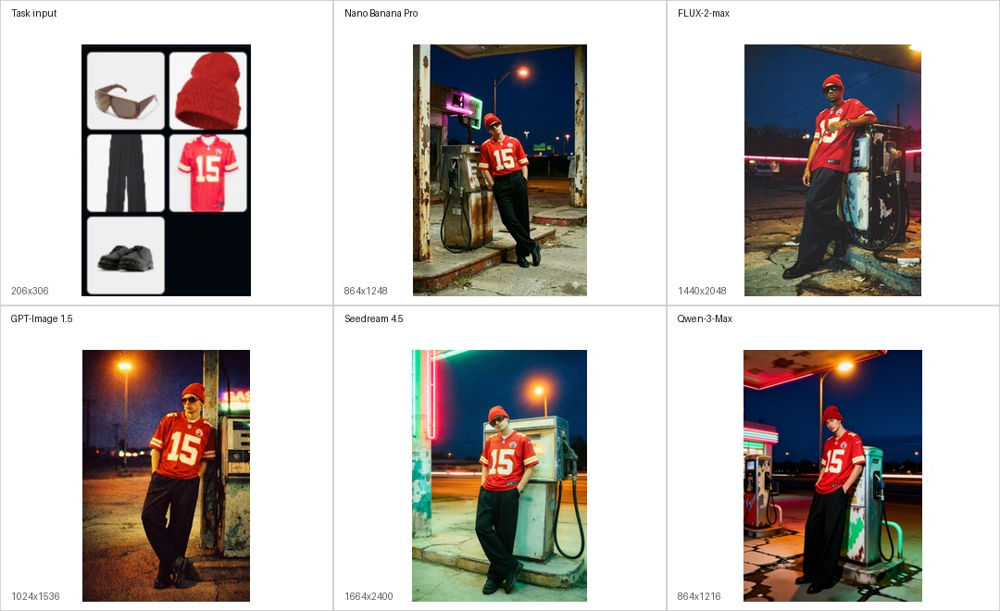
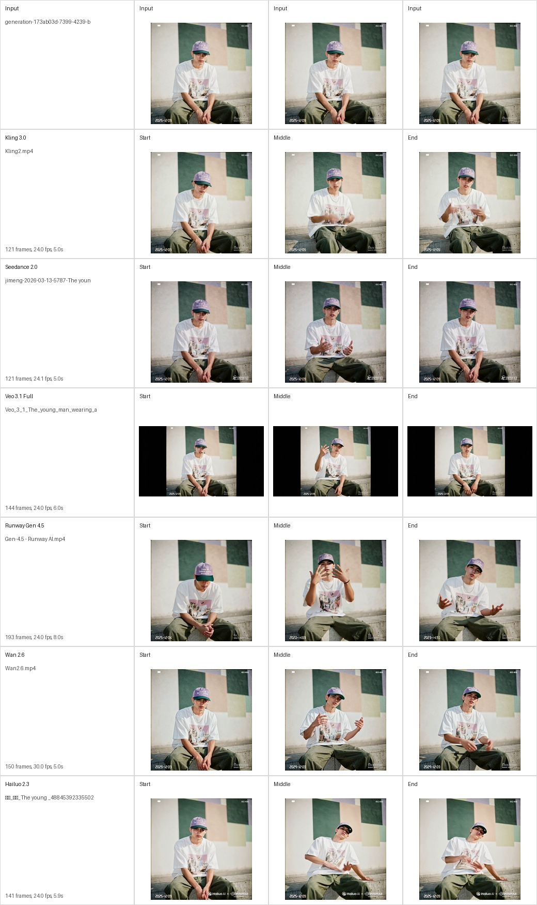
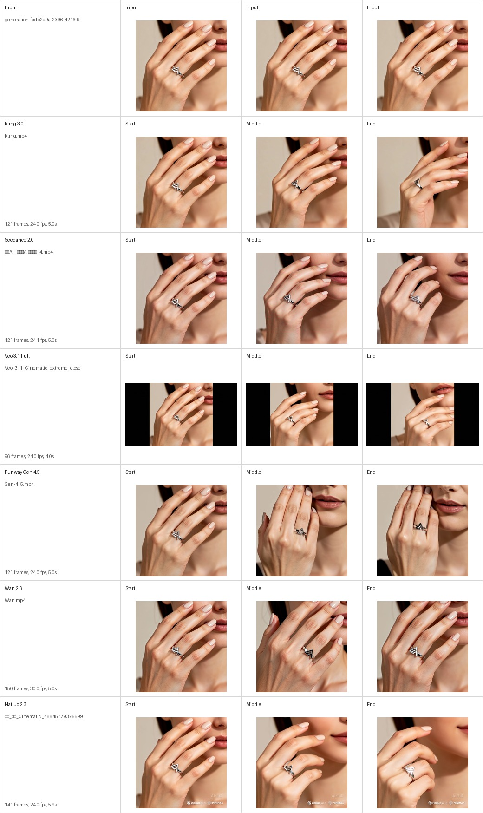

预算有限但上新频繁，需要低成本主图、模特图和短视频候选。

AIGC Product Design / Model Evaluation / Portfolio Case
AI 电商素材生成与模型评测系统
面向中小电商商家，设计从商品图、虚拟模特图到商品视频的生成流程，并用 Benchmark 支撑后台模型推荐策略。
01 / 需求推导
从素材缺口到P0推导
痛点分析 · 中小商家缺乏专业摄影团队和模特资源
拍摄成本高
专业摄影、模特、场景租赁费用高昂，单次拍摄成本可达 数千至数万元。
生产效率低
传统拍摄周期长，换季 / 上新需要重新拍摄。
场景覆盖不足
一张商品图难以覆盖多场景展示需求。
模特资源受限
难以匹配多元化的目标用户群体。
视频内容缺口
短视频时代对商品视频需求量大，但制作门槛高。
多平台适配难
淘宝、抖音、小红书、跨境电商等平台对素材风格要求不同。
→ 内容生产成本高、效率低，缺口成立：素材生产高频、刚需，适合被产品化。
竞品调研 · 5 家平台
平台
核心优势
主要短板
绘蛙
功能覆盖面行业最全，三步流交互最成熟
生图速度偏慢（1-2 分钟/张），偏重服饰鞋袜
Pic Copilot
功能覆盖 24+，操作门槛低
AI 模特不够自然，模板同质化
WIME
批量处理 + LoRA 风格一致性
¥3800/年定价门槛高，缺自定义提示词
WeShop 唯象
模特多样性强（60+ 种族/年龄/体型）
不支持多商品同时上身，2-3 元/张
美图设计室
单张 0.1 元行业最低，全品类覆盖
商品图效果不如绘蛙，交互不便上手
短板共性：自定义提示词缺失 · 交互门槛高 · 模特自然度不足
→ 机会不在功能堆叠，而在「可控 + 稳定 + 低门槛」的生成体验。
产品定位
为电商商家提供从商品图、模特图到营销视频的全流程 AI 内容生成服务，显著降低内容生产成本，提升营销素材产出效率。
−70%单商品素材成本降低
3天→2小时全渠道素材产出时间
≥ 实拍AI 素材点击转化率（A/B 对比）
10+主流电商平台规格适配
→ 目标必须可验证：质量与稳定性交给 Benchmark 量化 → 见 02 / Benchmark。
产品需求列表 · 依据：核心诉求 = 白底图（最高频使用）+ 模特图（最重要的降本增效场景）
P0 白底产品图 / 虚拟模特图 / 功能点击率收集
白底图：最高频使用场景；模特图：最重要的降本增效场景；埋点：理解用户偏好。
P1
场景图 · 匹配不同模特 · 买家秀 · 局部重绘 · 4K 放大。
P2
多角度展示 · 细节放大 · 图生视频 · BGM 与口播 · 批处理 · 参考图 Prompt 识别。
→ P0 覆盖最高频与最重要的两类素材，并先产出反馈数据（见 03 / 数据闭环）。
真实性边界：当前为产品研究与高保真原型，不写成已上线产品，也不宣称真实转化结果。
目标用户 · 由 PRD 痛点与竞品观察推导
同一商品要适配淘宝、小红书、抖音和跨境渠道，更关注批量、规格和稳定性。
能判断素材质量，但不想反复写复杂 Prompt，需要模板、约束和失败标签。
01上传商品图
02选择素材类型
03填写风格约束
04系统推荐模型
05生成候选结果
06修改或下载
→ Demo 主流程从商家任务开始。系统默认推荐模型，用户只需要判断结果是否可用。
边界：用户画像来自 PRD 推导，后续需要补访谈验证。
02 / Benchmark
多模型Benchmark评测
围绕商品还原、人物一致性、动作可控、镜头稳定、商业可用性和成本效率完成小样本评测。
1-5 分制，按任务权重计算加权总分；图像和视频保留各自原生维度。
分数对应输出图、视频关键帧和失败观察，避免只展示抽象排序。
当前是小样本主观初评，不宣称统计显著，也不写成线上用户效果。
后续补原始 Prompt 归档、双人复评和失败标签复核。
图片模型: Nano 领先, FLUX 紧随其后
明度即分数，颜色越深得分越高，最深的柱梯为本图最高纪录。
chart high ≥4.35
strong ≥4.15
middle ≥3.75
risk ≥3.25
below 3.25
PAIRED RUNGS EXTENDED · PORCELAIN · 10 TRUE IMAGE MODEL RECORDS · SCORE SCALE 0 TO 5
视频模型：Kling 以稳定性获胜
每个柱梯代表一条真实的基准测试记录；同一蓝阶，颜色越深得分越高，最深的柱梯为本图最高分。
chart high ≥4.35
strong ≥4.15
middle ≥3.75
risk ≥3.25
below 3.25
PAIRED RUNGS EXTENDED · PORCELAIN · 12 TRUE VIDEO MODEL RECORDS · SCORE SCALE 0 TO 5
多维评分表
One dot = one scored model-dimension record. Dot size compares models within the same dimension; color keeps the absolute score band.
dimension high
4.4+
4.0-4.39
3.4-3.99
below 3.4
ARC MATRIX ADAPTED · PORCELAIN · TRUE MODEL-DIMENSION RECORDS · SIZE = ROW-RELATIVE SCORE · COLOR = ABSOLUTE SCORE BAND


后台策略：默认模型与兜底模型
Benchmark 结果转化为系统侧推荐依据，不作为商家主流程展示。One line = one backend decision：粗线 + 总分 = 默认推荐，细线 = 备选兜底；节点面积 = 覆盖任务数，深色节点 = 承担默认生成的模型。前台只显示推荐模型、可切换选项和失败后的重试建议。
默认推荐 recommended
备选兜底 fallback
默认模型 primary model
仅备选 backup only
TYPE COLONNADE ADAPTED · PORCELAIN · 4 TASKS → 6 MODELS · 10 BACKEND DECISIONS · SCORES = WEIGHTED TOTALS
03 / 数据闭环
结果页反馈进入模型策略，而不是停在下载按钮。
设计功能点击、上传、生成、下载、重新生成和失败反馈埋点，用于判断素材采纳率、生成稳定性和失败原因分布。
下载率、收藏率和最终选择结果用于判断素材商业可用性。
记录重生成频次，定位模板、Prompt 或后台模型选择问题。
商品变形、颜色偏差、手部异常、镜头漂移等进入标签体系。
补双人复评、小样本访谈和 LLM Judge 校准，增强评测可信度。
04 / DEMO
Demo 聚焦上传、生成、修改和下载。
商家不需要理解后台模型选择。高保真原型只展示任务创建、结果选择和推荐模型，Benchmark 作为后台策略依据。